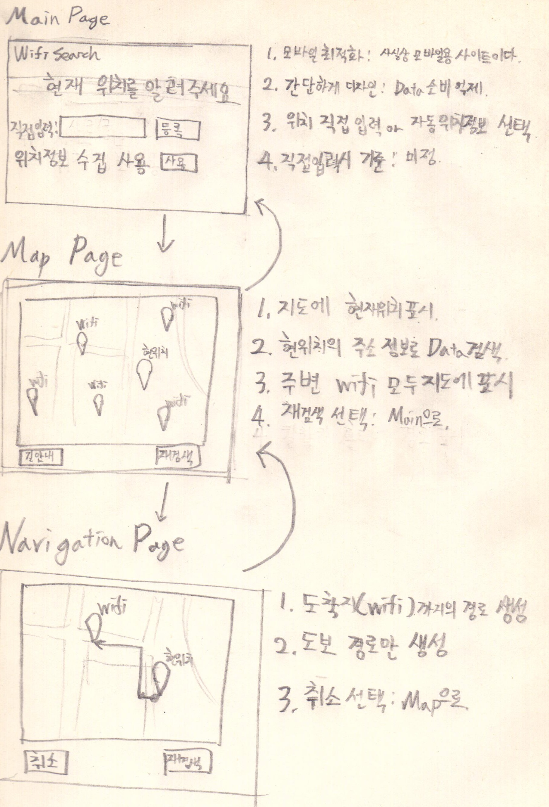

2013726059공병조
이전에 작성한 이미지와 거의 동일한 구조

가장 근처에 위치한 "무료 wifi" 검색 서비스
어떤 사용자와 과업을 대상으로 하는가?- 낮선 곳에서 당장 노트북을 인터넷에 연결해야만 하는 직장인
- 스마트폰 데이터가 조금 남았지만 지금 당장 보고싶은 방송이 있는 학생
- 기타 큰 데이터 사용이 필요한 과업을 수행하려 하는 사람
- 전국 무료 와이파이 표준 데이터 활용
- sk Tmap api 활용
- 현재 위치 근처 무료 wifi 위치를 검색해서 지도에 표시
- 현재 위치에서 wifi위치까지 경로 지도에 표시
*서비스의 효율에 대해
물론 요즘엔 카페만 들어가도 wifi를 이용할 수 있다.
하지만 항상 근처에 카페가 있는 것은 아니다.
또한, 사용하는 데이터에 비해 과업을 수행하는 시간이 짧다면,
일부러 카페에 돈을 내는 것은 아까울 수 있다.
고등학생 사용자가 주택가에서 무료 wifi연결을 찾는 영상
관찰결과 보이는 문제점
- 무료wifi를 찾기 위해서는 wifi 검색창을 켜고 확인을 계속하면서 이동해야만 한다.
- wifi를 찾더라도 연결이 느리거나 불안정해서 끊키는 경우가 잦다.
- 무료로 연결 가능한 wifi의 보안성이 검증되지 않아 위험하다.
*무료 wifi가 잡히는 위치
영상에 출연한 사용자는 거주지 근처의 무료 wifi가 잡히는 위치를 알고 있었다.
이것은 평소 사용자가 무료wifi를 필요로 하였으며,
무료wifi가 잡히는 위치를 경험적으로 파악하고 있음을 나타낸다.
- 안전한 무료wifi가 어디에 존재하는지 정확히 알 수 없다.
- 무료 wifi의 위치를 제공한다.
- 제공된 무료 wifi의 위치로 이동할 수 있는 경로를 제공한다.
- 무료 wifi의 위치를 공유/검증할 수 있도록 한다.(구현계획 없음)
*추가적인 문제점
무료 wifi 위치를 필요로 하는 사용자는 유료 데이터의 사용을 꺼려할 것이다.
그러나 이 서비스를 웹으로 구현하게 되면 이 서비스를 이용하는데 데이터가 필요하게 된다.
실제 운영한다면 서버측에서 많은 작업을 처리하고 최대한 작은 데이터로 이용할 수 있어야 한다.
전국 무료 wifi 표준 데이터
https://www.data.go.kr/dataset/15013116/standard.do같은 폴더에 저장된 data를 불러와 record태그 안의 값을 불러왔다.
*의문점, 문제점
1. 로컬에서 크롬으로 구동시 cross 에러 발생
-해결 : chrome.exe –allow-file-access-from-files 같은 방식으로 실행 필요.
2. 한글 xml태그를 파싱할 수 없다.
-인코딩으로 해결하지 못함 : 관련 내용 질문 / 조사 예정.
3. 실제 활용시에는 검색 기능을 적용해야 하는데, 파싱 후 일일이 검사는 효율이 좋지 않아 보인다.
-데이터베이스에 저장하는 편이 더 좋은가?
네이버 지도 Api
https://developers.naver.com/main/
*문제점
1. 로컬에서 크롬으로 구동시 인증 에러 발생
URL을 미리 등록하고 인증키를 받아야 하기 때문에
file:///을 이용하여 HTML로 지도api를 불러오는 것은 불가능하다.(localhost까지는 가능)
우선 통신이 되는 것을 증명하기 위해 오류 alert가 뜨도록 놔두었다.
따라서 현재 html에 작성한 스크립트는 임시적으로 네이버api튜토리얼을 그대로 붙혀넣은 것이며, 차후 로컬호스트로 html을 올린 후에 길찾기 기능 테스트를 할 예정이다.
geolocation Api
https://developer.mozilla.org/ko/docs/WebAPI/Using_geolocation
사용자의 동의를 얻은 경우, 사용자의 현재 위치정보를 표시해준다.
수집한 위치 정보를 지도와 연동하여 길찾기에 사용할 계획이 있다.